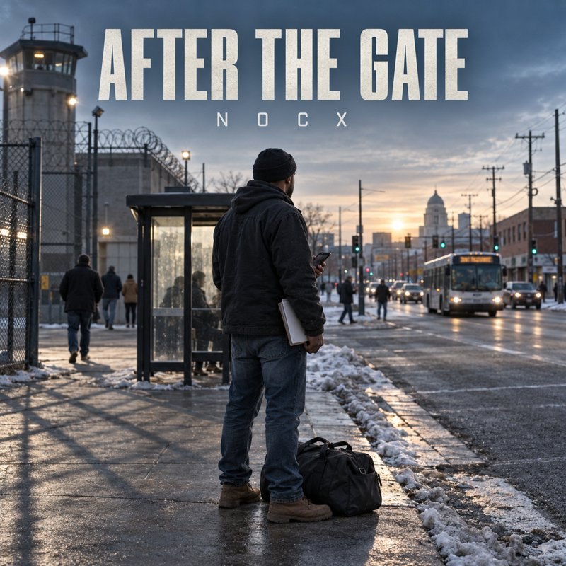

Release day is not the finish line. Written by Paper Chasers LLC founder Michael Winius, After the Gate is an honest, practical guide that addresses supervision, employment, finances, family, technology, prison habits, setbacks, and rebuilding life after incarceration.
The people who need this book most are often the ones least able to buy it. That is why we are asking for your help putting copies where they will be read: in the libraries of Wisconsin correctional facilities.
Sponsor a Copy
Every $10 places one copy of After the Gate in a correctional facility library. Choose the level that fits you. Payment is handled securely by Square.
Sponsor All 36 DOC Facilities
One copy for every one of the 36 Wisconsin Department of Corrections facilities.
Sponsor All 36Prefer to give any amount? You can also contribute through our GoFundMe fundraiser.
Get Your Own Copy
After the Gate is available in Kindle and paperback on Amazon.
Listen to the After the Gate Album
The book has a soundtrack. After the Gate by NOCX is an album about coming home: the cell door, the bus ride out, supervision, and staying free. Press play on any song below to listen right here, or stream it on Spotify, Apple Music, and all major streaming platforms.

-
1Out of the Cell2:31
-
2Cell Door Bounce (Stay Out)2:39
-
3Check Then Bounce2:59
-
4Ain’t Going Back2:48
-
5Concrete Classroom3:49
-
6Silence Is Gold3:26
-
7Never Again3:28
-
8Against All Odds6:01
Hear More
Michael Winius talks about coming home and supervision in Wisconsin on The People's Paralegal, the Paper Chasers LLC YouTube series.
Questions about sponsoring copies? Call or text (920) 572-8646 and we will be glad to help.
Call Us Research Library Home